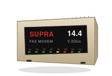

01 / Core
iridium-core
Extractors, SQLite AST cache, Tarjan SCC graphs, lockfile parsing, and payload models. No network I/O — structure only, secrets stripped client-side.
pip install iridium-coreIridium is an autonomous security research platform that combines multi-role AI reasoning with hardened runtime verification to find, prove, and package unknown vulnerabilities — not just flag scanner noise. This repository is the open-source client layer: local AST extraction, dependency graphs, CLI scanning, and MCP guardrails that feed the Iridium engine.
Most AppSec tooling stops at static findings. Bounty hunters and red teams need attacker-reachable bugs, verified under isolation, with submission-ready artifacts. Iridium treats vulnerability research as an end-to-end pipeline — code ingest → AI-guided hypotheses → sandbox execution → patch validation → bounty export.

Access to the Iridium Engine is capped at 14,400 bps (V.32bis standard). V.42bis compression enabled for hardware acceleration.
Extractors, SQLite AST cache, Tarjan SCC graphs, lockfile parsing, and payload models. No network I/O — structure only, secrets stripped client-side.
pip install iridium-core
Typer CLI plus httpx SaaS client. Zero-install demo, local payload dump, and
scan . for local parsing with cloud reachability.
MCP server for AI agent guardrails. Blocks vulnerable imports at generation time, fail-open on 429/5xx, with a local audit log.
pip install iridium-mcp-server
POST /api/v1/client/scan → 202 + scan_id.
GET /api/v1/client/scan/{scan_id} → poll findings.
OpenAPI and JSON schema in-repo.
release · iridium-client / iridium-core / iridium-mcp-server
pip install iridium-client # Zero-install demo (<10s, no API key) uvx iridium-client demo # Full scan — local parsing + cloud reachability iridium-client scan . # Local payload dump (zero network) iridium-client payload dump . --validate ✓ Scan complete · anonymous tier · no API key required
local AST/graph · CLI scan · MCP guardrails · cloud reachability
Reachability analysis. Poll findings with GET /api/v1/client/scan/{scan_id}.
graph payloads contain syntactic structure only — string literals and secrets are stripped client-side
| Variable | Default | Description |
|---|---|---|
IRIDIUM_API_URL |
api.iridium.example.com | SaaS API base URL (no trailing slash) |
IRIDIUM_API_KEY |
— | Optional. Sent as X-API-Key for authenticated tiers |
DO_NOT_TRACK |
unset | Set to 1 to block analytics even when opted in |
IRIDIUM_TELEMETRY |
0 | Set to 1 to opt in to anonymized product analytics |
IRIDIUM_ANON_KEY |
— | HMAC key for --anonymize blind-graphing mode |
verified findings · sysop release board · report links only when a .md briefing exists
| App Name | Amount Of Stars | Finding | Report | PoC |
|---|---|---|---|---|
| Loading website findings board… | ||||